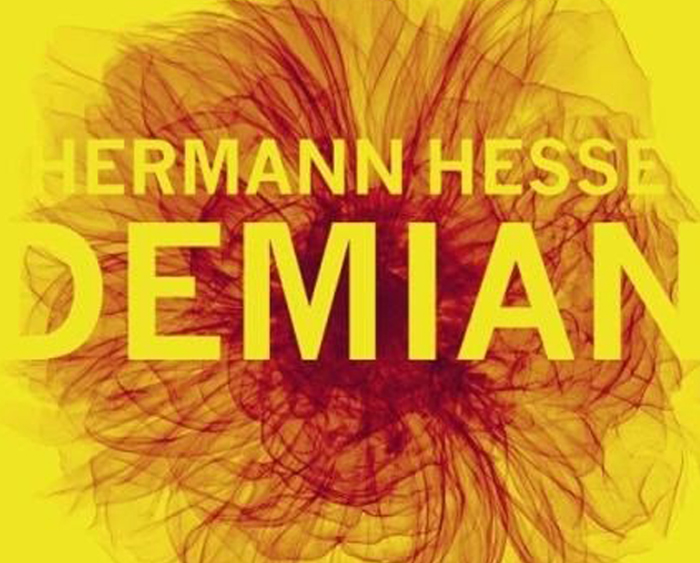

Miguel sai de casa jogando no celular, ele fica tão distraido que quando a bateria acaba, percebe que está no Japão! É um livro envolvente, que demonstra para as crianças, como o mundo real pode ser mais interessante que o virtual
Livros da autora
-
2017
Onde está Miguel?
Miguel sai de casa em São Paulo e vai andando sem prestar atenção em nada, apenas nos joguinhos do seu celular. Quando a tela se apaga, ele percebe que está no Japão! Estava tão distraído, que não sabe como foi parar do outro lado do mundo. Com seu livro de estreia, a autora propõe uma reflexão para o público infantil, sobre como o excesso de tecnologia pode afetar a nossa relação com a realidade que nos cerca.
-
2014
Um conto por dia
A partir de um desafio feito para si mesma, a autora se propôs a publicar um conto inédito por dia durante um ano no seu blog. Ao terminar o projeto resolveu publicá-lo. Nesta edição ela trata de questões complexas ou banais do cotidiano com leveza e objetividade. Os temas são variados, a autora transitou por diversos gêneros como o humor, drama, temas sociais e afetivos. Uma forma de olhar o mundo, de olhar o outro, traduzir sentimentos, sensações em palavras, questionar valores ou apenas narrar uma história, os contos refletem a diversidade que a vida suscita.
Sobre a autora
Carol Bradley
Nasceu no Recife, em 1975. Formada em Direito e Jornalismo pela UNICAP é autora do romance Nunca é tarde para Recomeçar e do livro Um conto por dia. Estreia na literatura infantil com o livro Cadê Miguel?
Contato
Indicações de livros
conheça algumas obras indicadas pela autora.

Crime e Castigo
Fiódor Dostoiévski
Demian
Hermann Hesse
Compre aqui!
-